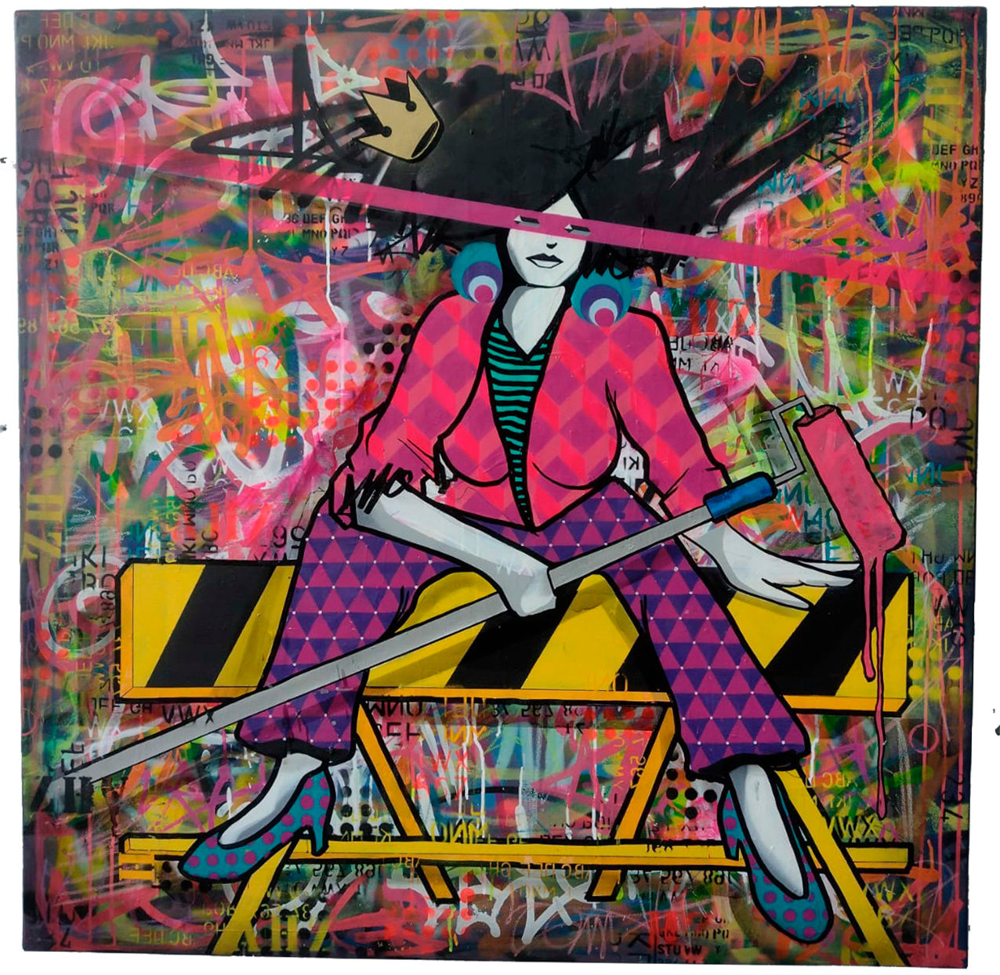

Exposição de Onurb explora o cotidiano urbano com uma fusão de grafite, psicodelia e cultura punk

Com 17 obras, a mostra na Galeria Alma da Rua II propõe uma reflexão sobre o caos e a resistência nas metrópoles, trazendo à tona a desconexão entre humanidade e natureza.
A Galeria Alma da Rua II inaugura, no dia 26 de outubro, a exposição "Amor Punk", do renomado artista visual Onurb. A mostra, que tem curadoria de Tito Bertolucci e Lara Pap, reúne 17 trabalhos que mesclam grafite, psicodelia e elementos da cultura punk para retratar a vida urbana em toda a sua intensidade. Com abertura às 14h e visitação gratuita até o dia 27 de novembro, Amor Punk é um mergulho em um universo visual que propõe discutir o cotidiano das grandes cidades e a complexa interação entre o indivíduo, o espaço urbano e o meio ambiente.
A exposição traz a icônica personagem de Onurb em cenas cotidianas, interagindo com elementos visuais que evocam a psicodelia e a moda, enquanto exalam um ar de empoderamento e resistência. Utilizando uma abordagem multissensorial, o artista transforma murais, telas e instalações em narrativas visuais que exploram a estética do movimento punk e a força transformadora da arte urbana. Onurb, que começou sua carreira nas ruas de São Paulo como grafiteiro, aproveita seu estilo marcante, com cores vibrantes e formas geométricas, para construir um discurso crítico sobre as relações entre o público e o espaço urbano.
Em suas obras, a presença de fauna e flora atua como metáfora da resiliência no meio do caos urbano, contrapondo a natureza à rigidez das metrópoles e denunciando a crescente desconexão das pessoas com o ambiente natural. Cada peça reflete a trajetória do artista e sua constante busca por fusão entre os elementos da rua e os espaços expositivos tradicionais, levando a arte de rua para dentro das galerias sem perder sua essência contestadora.
Em Amor Punk, Onurb dialoga com questões contemporâneas como a alienação, o isolamento e o excesso de estímulos visuais das cidades, ao mesmo tempo em que exalta a diversidade cultural e a resistência das subculturas urbanas. A espiritualidade também aparece em suas obras como um componente fundamental, simbolizando a busca por sentido e identidade em uma sociedade que muitas vezes ignora a individualidade e o respeito pelo meio ambiente. Assim, a personagem de Onurb se torna um espelho da experiência de muitos habitantes urbanos, que, em meio à agitação das cidades, buscam formas de expressão e de pertencimento.
Nascido em São Paulo, Bruno Paes, conhecido como Onurb, começou sua carreira explorando muros e espaços públicos como grafiteiro. Seu trabalho ganhou notoriedade rapidamente, alcançando galerias e museus no Brasil e no exterior. Com uma estética que transita entre a urbanidade e a crítica social, Onurb se tornou um dos principais representantes da arte urbana brasileira, reconhecido pela habilidade de misturar técnicas e referências culturais em suas obras. Ele participa de importantes eventos de arte urbana e realiza colaborações com outros artistas do street art, contribuindo para o fortalecimento e a visibilidade desse movimento.
Amor Punk promete uma experiência imersiva e reflexiva para os visitantes, levando-os a questionar o papel da arte e da cultura punk na transformação dos espaços urbanos e na reconexão entre humanidade e natureza.